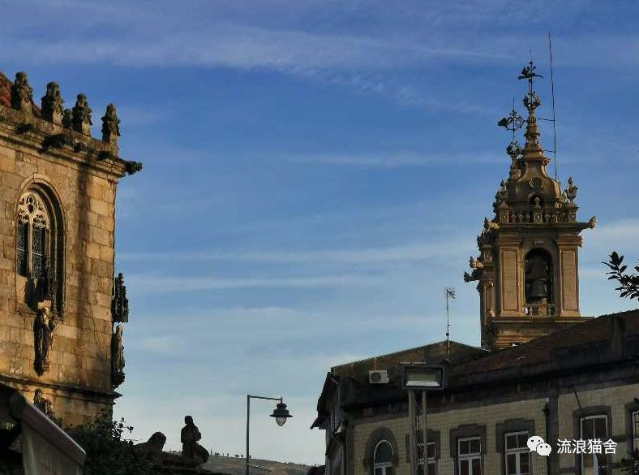
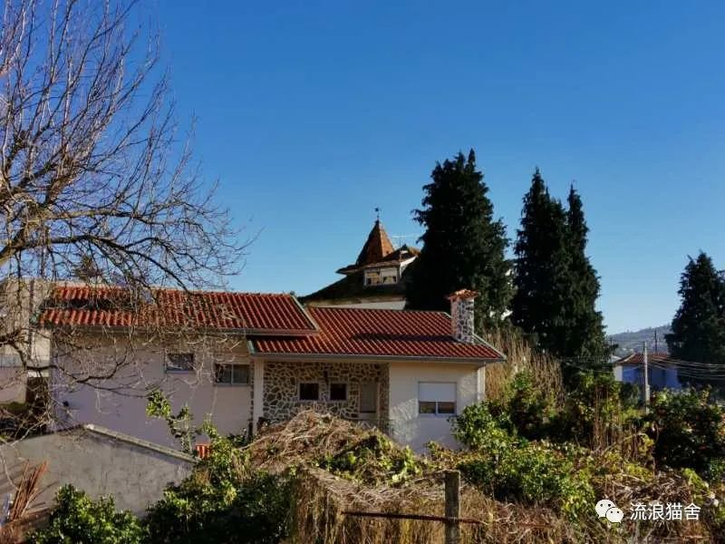
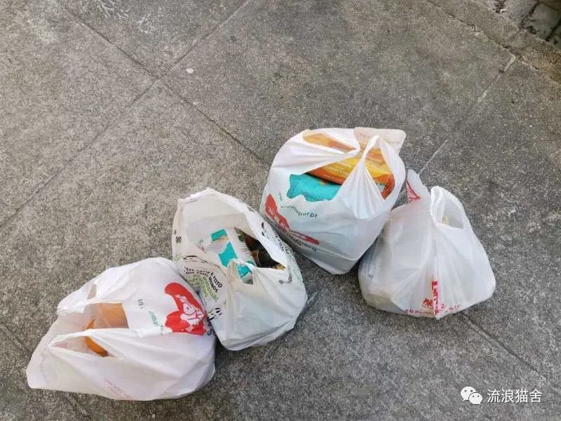
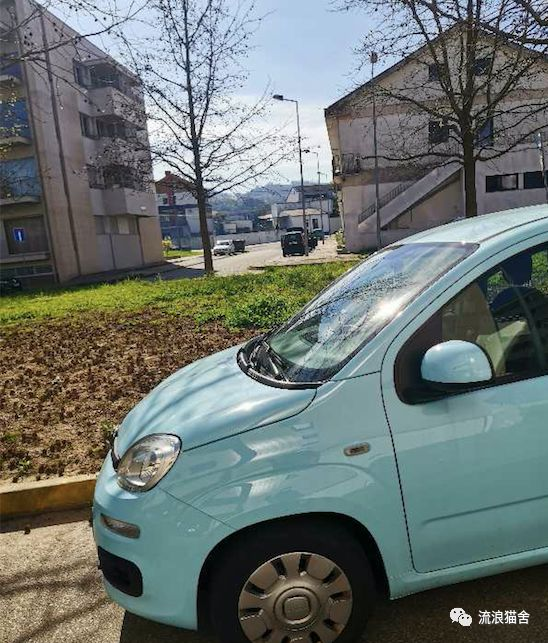

美国“三剑客”救国悬念
原文链接 备份链接 当人类生存的主题被病毒、大流行病裹挟时，在白宫坐镇的特朗普、民间看好的疾病专家安东尼·福西和美联储主席鲍威尔纷纷出招，是老旧的套路还是定海神针，还未可知 文 |《财经》特派记者 金焱 发自华盛顿 编辑 | 苏琦 3 …
上周完成了本公众号第一篇采访稿：波兰，浴火重生之地（上），昨天完成了本号第一个译稿：西班牙 COVID-19 : 我“宅”在瓦伦西亚的第一天（译文），热烈庆祝本号今天迎来第一篇投稿！
有希腊的朋友投稿或接受采访吗，集齐南欧国家我就要召唤东西北中欧的朋友啦！
生活与生存：我在葡萄牙
由于新冠病毒疫情，中国的2020庚子鼠年春节格外冷清。人们的生活范围不得不缩小，尽可能换取健康地生存。比起生活在这里的葡萄牙人、巴西人等等，在葡华人华侨早早地就开始密切关注新冠疫情了。因为中国是故土、有亲人，因为中国的情况会影响其他人对中国人的态度，影响华人华侨们在这里开展的事业，因为谁也不能预言春节后返葡留学生等返葡华人会给葡萄牙带来什么。所幸他们只带来了生机，和时机。商会、学联、个人都会督促并帮助返葡人员隔离十四天。从正月十五（2月8日），到3月2日葡萄牙确诊首个新冠，是22天。早在1月27日葡萄牙出现了疑似病例，当然最后结果为阴性，排除。

葡萄牙, 不缺教堂的宗教之城Braga.
疑似刚刚出现的时候，我们都紧张了一下，不过葡萄牙人只是紧张了一下，大概是华人华侨更能体会到新冠病毒的威力——湖北一下子就陷入了医护人员紧张、防护用品紧张、床位紧张的状态。这些问题通过一省支援一市、企业紧急搭建生产线、雷神山与火神山医院、方舱医院得到了解决，但我们也看到新冠疫情自出现以来从中国“带走”了不少人。他们不是数字，他们也是别人的父母、子女、爱人。“老吾老以及人之老，幼吾幼以及人之幼。” 疫情来临，还有些人，那些有其他疾病的人，生活或生存质量受到了极大影响。我会想到我的母亲，如果是今年才查出癌症，恐怕也会面临诸多挑战。不过她和我都不需要再假设和考虑这个问题了，永远也不需要了。
“基建狂魔”短时间内造出了“两座大山”（“雷神山”和“火神山”医院），还是很提气的，葡萄牙人也知道。我的高级班学生说“中国很了不起，做了两个医院”，我那天就给他们补充了“病毒、隔离”等词语。我还给初级班讲过“病毒”这个词，那时中国疫情正是吃紧，欧洲一些国家发生了歧视现象，我特意挑了一张戴口罩的大黄脸，教我的学生——“病毒”来了，怎么办？多洗手、戴口罩。有图有拼音，这些句子都不难。我真心希望学生能够身体健康、不歧视他人。学生还自愿和中国老师、葡萄牙本土教师录制了“中国加油”视频，感动！谢谢！

Braga, 邻居家小别墅。
这好像已经过去好久了，这几节课是2月3日、8日和12日上的，今天是3月16日，我已经停课一周了。停课最初是因为3月9日大学校区确诊了一个新冠病例，大学紧急停课。密闭空间更易传染，我们这些中国老师对使用公共交通内心是拒绝的。隔壁城市也有孔院，那里停课比我们晚几天，在停课前，她们为了避免乘坐公共交通，每天有一个多小时要花在走路上。现在，从今天开始，全葡停课了。学习对于人类是重要的能力，但比起生存，又实在是件小事。或者说，人类的学习不应局限在书本知识、身体素质、语言技能等科目上。如何应对病毒本就是人类生存繁衍的课题之一，这门课如果逃课，不存在挂科，但会不会出局呢？

囤货必备：面粉、意面、罐头。
停课的9天里，我出过三次门，采购生存物资，为3月19日办理在这边合法生活的居留卡准备材料。我是顶不愿意在葡萄牙及欧洲疫情越来越严重的情况下，去别的城市办理居留卡的，尤其是那个大区的病例一直“噌噌”地涨。不紧张才怪吧？在如何选择出行方式上，我真是没了主意，于是请教了在中国医院工作的死党，在火车、出租车和葡萄牙同事的车之间选择了最后一种。刚刚在“葡华报”微信公众号上看到一则推送，内容是葡萄牙3月13日颁布的第10-a/2020号法令第16条规定，签证等证件有效期自动延至2020年6月30日。虽然还需要和预约的中心进行确认，但这真是一个好消息！这简直是居家期间最开心的事！不用在合法生活和安全生存之间抉择了。居家生活的内容也算丰富，做饭睡觉学习工作看剧都算选项常规，要说什么不一样的，我最近在手机上下载了拼模型游戏、今天给家里的两个柜换了地方。生存无虞，生活何忧！

囤货不容易。

采购路上偶遇春天。
作者/图片：Lyna, 汉语国际教育硕士，意大利撒丁岛“岛主”的同行和朋友，曾在巴西伯南布哥大学工作两年，现工作在葡萄牙的一个小城市。
非常感谢，muito obrigado!

昨天晚上收到同行的投稿，真是太兴奋了。
欢迎世界各地的你贡献来自世界各地的声音，让我们在足不出户，看真实的世界。
如有打赏，“岛主”也会转给作者。
**国内外朋友都可以通过邮箱联系我：monawangshanshanmona@gmail.com
**
海外或者能翻墙的朋友也可以通过Instagram联系我：Shanshan Wang/Mona
**投稿和语音采访都妥妥哒！
**
长按二维码向我转账
受苹果公司新规定影响，微信 iOS 版的赞赏功能被关闭，可通过二维码转账支持公众号。
原文链接 备份链接 当人类生存的主题被病毒、大流行病裹挟时，在白宫坐镇的特朗普、民间看好的疾病专家安东尼·福西和美联储主席鲍威尔纷纷出招，是老旧的套路还是定海神针，还未可知 文 |《财经》特派记者 金焱 发自华盛顿 编辑 | 苏琦 3 …
原文链接 备份链接 应对重大公共卫生事件对美国大选影响举足轻重，福特总统在1976年连任失败被指一定程度上受到应对猪流感事件不利的影响，特朗普目前应对疫情的表现被美国媒体称为“灾难”，他能亡羊补牢，避免重蹈覆辙吗 文 |《财经》记者 王晓 …
原文链接 备份链接 新冠疫情是一场全球灾难，也是各国公共卫生的练兵场。 按照世界卫生组织专家、伦敦卫生和热带医学院流行病专家戴维 · 海曼（David Heymann）教授的观点，阻止新冠病毒传播的更重要的因素是一个国家医疗保健体系的实 …
原文链接 备份链接 这是一种全新的病毒，还有很多未知。它代表了一种演进的公共卫生突发事件，我们还会在其他国家看到更多确诊病例。中国对传染病以及卫生突发事件的诊断、治疗和管理能力在过去20年得到了显著的提升。 文 |《财经》记者 江玮 发自 …
原文链接 备份链接 目前包括中国大陆在内，全球已经有41个国家和地区出现了疫情，其中，韩国是中国大陆之外疫情蔓延最快的国家。 尽管如此，世卫组织不希望在“没有谨慎和清晰地分析事实情况之前”仓促宣布疫情为全球“大流行病” 文 |《财经》特派 …